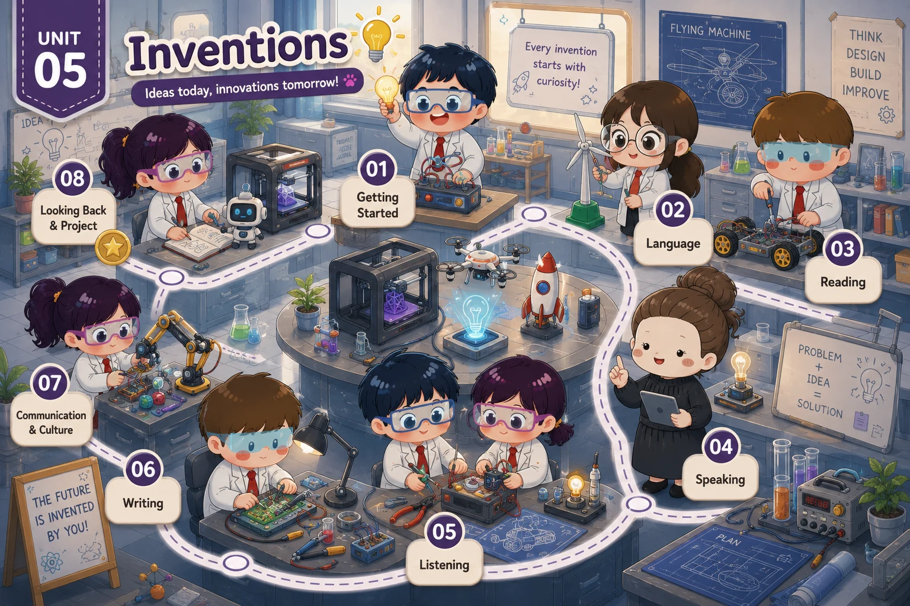

Lesson 1 · Getting started — Inventions for education — chưa có bài giảng Lesson 2 · Language — chưa có bài giảng Lesson 3 · Reading: Artificial Intelligence — chưa có bài giảng Lesson 4 · Speaking: Uses of an invention — chưa có bài giảng Lesson 5 · Listening: A smart robot vacuum cleaner — chưa có bài giảng Lesson 6 · Writing: Benefits of an invention — chưa có bài giảng Lesson 7 · Communication and Culture / CLIL — chưa có bài giảng Lesson 8 · Looking back and Project — chưa có bài giảngBản đồ Unit 5 đã dựng, chưa có tiết nào — tám thẻ đang khoá. Dựng xong tiết nào thì mở khoá thẻ đó.